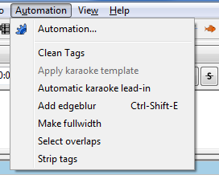

Aegisub / Automation / Running macros
Automation macros appear as options in the Automation menu.

The first option in the Automation menu, before the separator, always opens the Manager window.
Below the separator is a list of all macros loaded. In the example above seven macros are loaded. The third, Karaoke Templater is unavailable though, because the macro has determined it can't be run on the subtitles. In this case, because the subtitle file has no karaoke templates. Other macros might be unavailable for other reasons. The fourth has had a hotkey set in the preferences dialog
To run a macro, just select it from the Automation menu. Some macros might ask you for more information, and some work only on the selected subtitle lines. Always remember to read the documentation that came with macros you downloaded from the Internet.